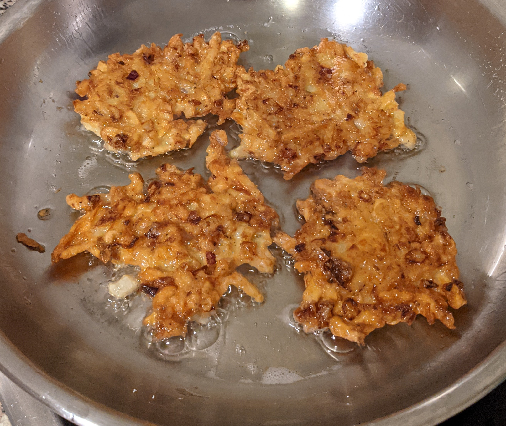

Latkes

Description
A latke is a type of potato pancake or fritter found in Ashkenazi Jewish cuisine. The dish, which is traditionally served during Hanukkah, can be made with grated, shredded, or mashed potatoes.
Ingredients
- 3 medium potatoes
- 1 large egg
- 2 tablespoon potato starch
- 1 small onion
- 1 teaspoon salt
- 1/4 cup olive oil
Steps
- Peel and grate the potatoes and the onion. Beat the egg and add salt.
- Add the oil to a pan and heat your pan to 350o.
- In the meanwhile, mix the potatoes, the starch and the egg in a mixing bowl.
- Add the onion to the pan.
- After 2 minutes add the mixture as well. Fry until it becomes golden brown.